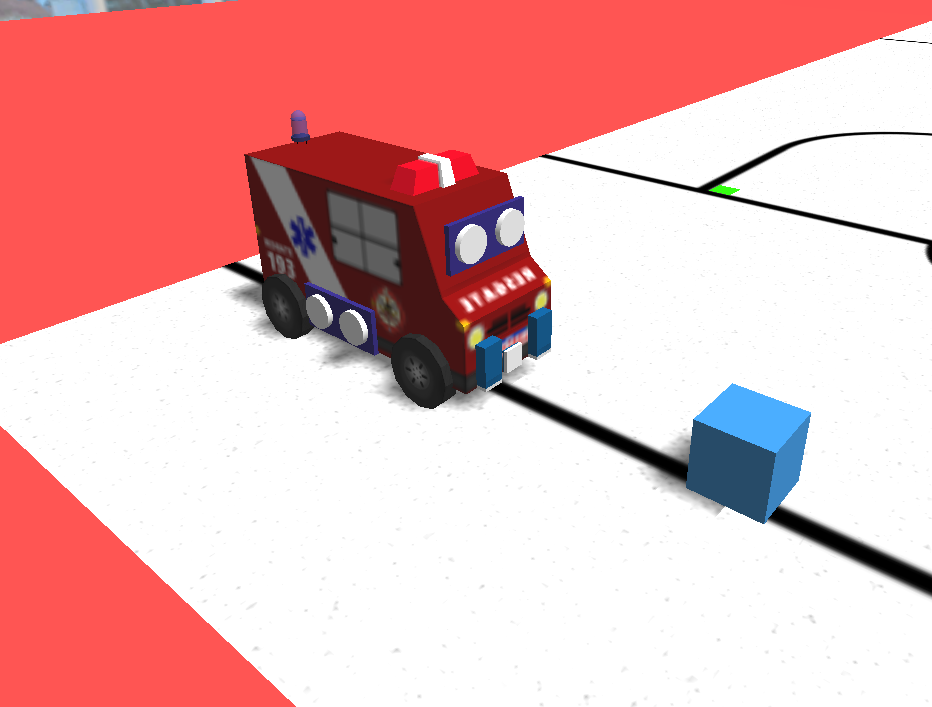
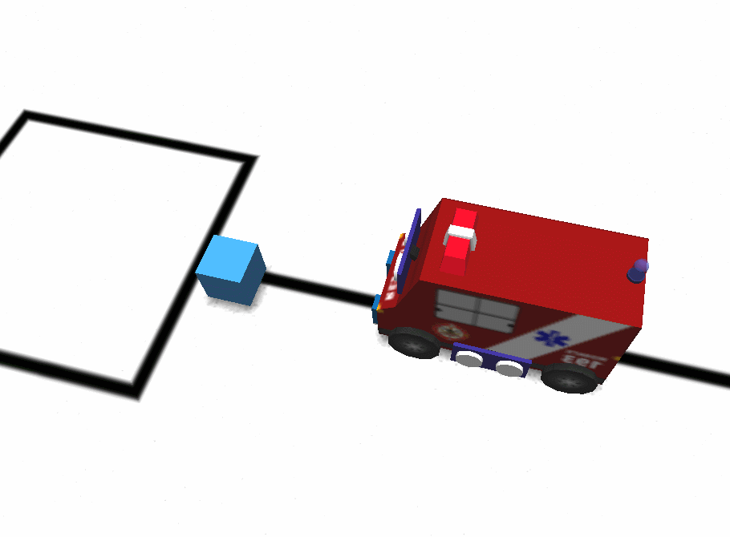
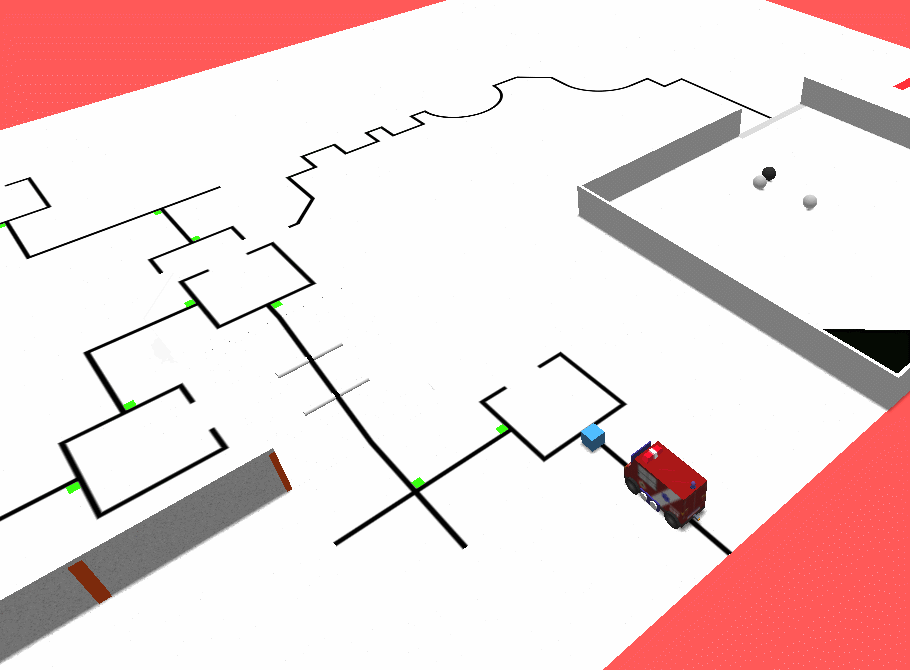
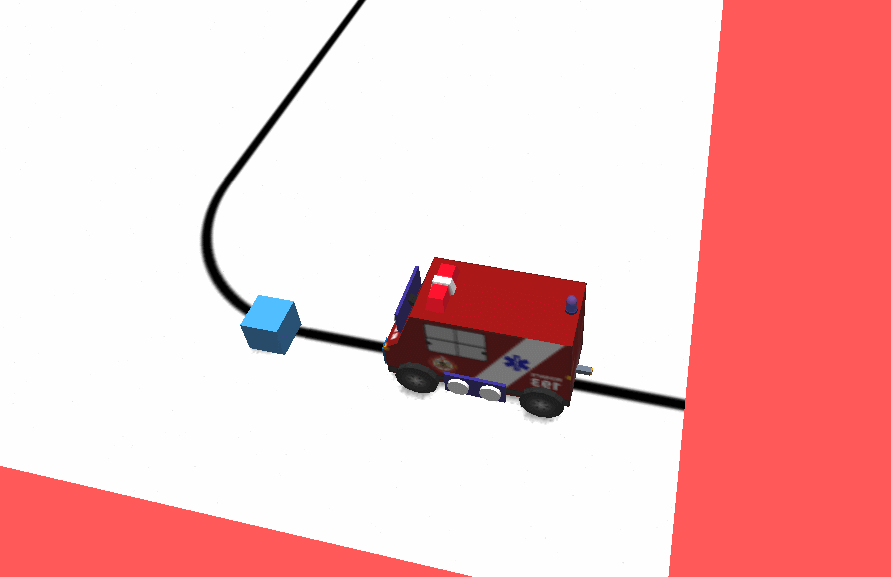

Your first line follower in rEduc
guide:line_follower
If you want to know the basic features of the simulator, you may want to read our getting started tutorial.
After authenticating and choosing your favorite robot to make the line follower you'll have to create your first program. For this tutorial I'll be using Rescuelance, the first and default robot.

Now take a look at the robot tab to see the sensors and their indexes. As you can see from the image below, the right sensor has the index 1 and the left sensor has 2.

Now open the programming tab and make sure you are programming in rEduc (this is shown below the first time you open the tab or change languages):

Now let's make a simple program. To test, execute this very simple program that should make the robot move forward with strength value 60:
begin
forward(60)
end
As you can see, this didn't move the robot forward at all. And if it actually did, it was only for 1 milisecond.
For the robot to move forward for a period of time instead of a fraction of a second, the state of the motor has to stay put for a while.
In this case, we will use the wait(number) function.
begin
forward(60)
wait(2000)
end
As you can see, the robot moved for 2 seconds (or 2000 miliseconds) before stopping the program.

In order to make a line-follower the program has to repeat itself indefinitely (that is, as long as the program is being executed). To do this we will be creating a simple loop using while.
begin
while (true) do {
}
end
The code above will repeat itself indefinitely, and it literally reads as: "while the condition "true" is true, do: ".
Now let's move the robot forward.
begin
while (true) do {
forward(60)
}
end
The code above will run the robot forward (for 1 milisecond) indefinitely.

Now let's read the color values seen by each sensor using the write function.
Let's print the right sensor's value on the first console line and the left sensor's on the second.
begin
while (true) do {
write(1, color(1))
write(2, color(2))
forward(60)
forward(60)
}
end
As you can see, the sensor sees different color values and prints them on the console. Now we can use this to our advantage.

With a simpler arena this time, let's make the robot turn turn right when the right sensor (1) perceives "BLACK".
To do this, we will use the conditional if.
Note! Moving sideways causes more friction and the strength of the motors may have to be raised in contrast to their forward/backwards counterparts.
begin
while (true) do {
write(1, color(1))
write(2, color(2))
if(color(1) == "BLACK") then {
right(200)
} else {
forward(60)
}
}
end
If you wish to use variables to store the color values and make your code slightly more efficient you can do so this way:
text rightS = ""
text leftS = ""
begin
while (true) do {
rightS = color(1)
leftS = color(2)
write(1, rightS)
write(2, leftS)
if(rightS == "BLACK") then {
right(200)
} else {
forward(60)
}
}
end
As you can see, now the robot follows the line (although only forwards and on right turns):

color() can be limiting, specially if you want to calibrate your robot to different lighting setttings. The same code above can be rewritten with light as:
Tip! Try making auto-calibration algorithms. Depending on the "time of day" the robot can stop functioning altogether due to poor calibration.
number calibration = 30
number rightS = 0
number leftS = 0
begin
while (true) do {
rightS = light(1)
leftS = light(2)
writeNumber(1, rightS)
writeNumber(2, leftS)
if(rightS < calibration) then {
right(200)
} else {
forward(60)
}
}
end
Now it's up to you to make a complete line-follower and more complex algorithms. Experiment with sBotics and join our community on discord. There are loads of people there that would like to help you in your journey.
If you wish to view all rEduc or C# functions, access this website.